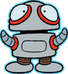
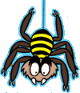
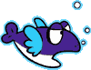
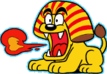
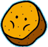
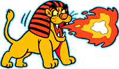
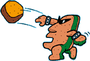
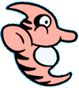
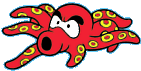
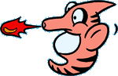

|
|  |  |  |
| メカポン／800PTS | ス−／400PTS | トリオン／100PTS |
| ▲首を飛ばして、マリオを攻撃してくるロボット。飛んでくる首を踏んでもやっつけられない。 | ▲洞くつに済み、マリオが近寄ると上から音もなく降りてくる。 | ▲いつも3匹つらなって泳いでいる人食い魚。魚雷1発で倒せる。 |
|  |  | |
| ガオ−／800PTS | ガンチャン | ホーネン／100PTS |
| ▲体が重いいためじっとしているが、マリオをねらって火の玉をはく。 | ▲空から急に降ってくる岩。押しつぶされるとたいへんだが、上に乗って移動できるので利用しよう。やっつけられない。 | ▲トリオンがタタンガに食べられた後の姿？水中から真上に飛び出してくる。スーパーボールはきかない。 |
|  |  | |
| キング・トドメス／5000PTS | ヒョイホイ／5000PTS | |
| ▲ピラプト王国のボス。上下にジャンプしながら炎をはく。踏んでも倒せないが、スーパーボール5発で倒せる。 | ▲イーストン王国のボス。トコトコの進化したもの。ガンチャンを投げてくるので、押しつぶされないように。踏んでも倒せないが、スーパーボール10発で倒せる。 | |
|  |  |  |
| ユラリン／400PTS | グニョン／800PTS | ユラリン・プ−／400PTS |
| ▲ドラゴンザマスの手下で、水中をゆらゆらしながら泳いで来る。魚雷2発で倒せる。 | ▲水中で上下に揺れているだけだが魚雷2発を撃ち込むと、2つに分裂して襲ってくるので注意しよう。 | ▲ユラリンの兄さんで、上下に動きながら火の玉をはく。ス−パ−ボ−ルはきかない。 |
|
|